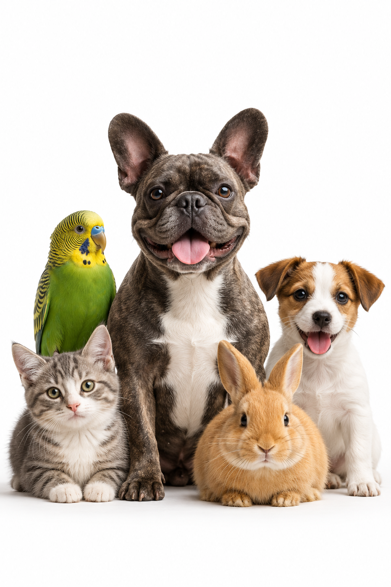
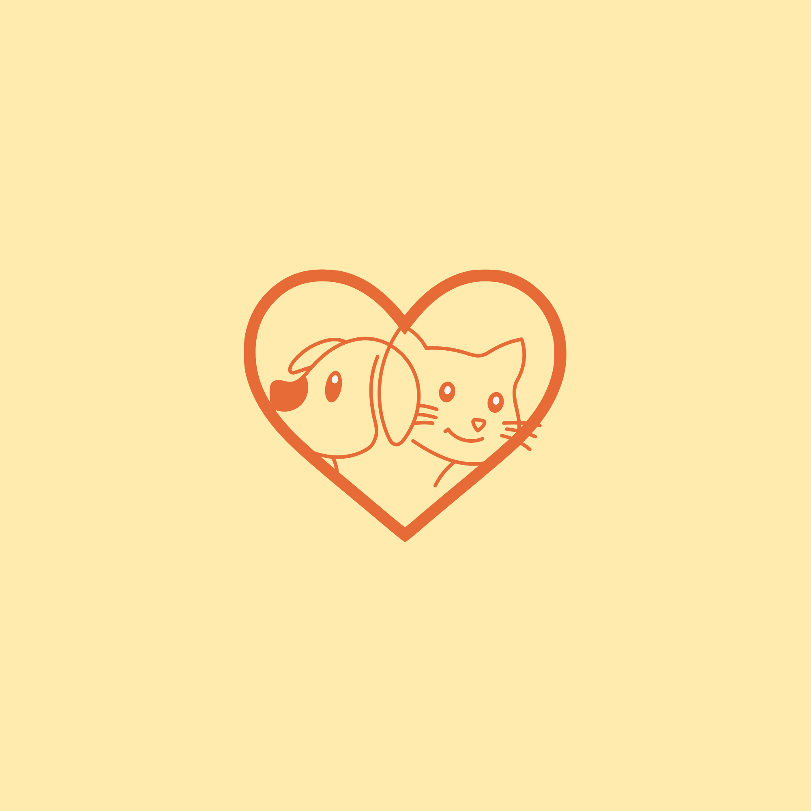

Perros
Alimentación y cuidados
Descubre consejos, guías e información veterinaria para cuidar la salud y el bienestar de tus animales.

Contenido revisado por profesionales
Aprende a cuidar a tus mascotas
Recomendaciones prácticas

Mejorando su calidad de vida
Alimentación y cuidados
Salud y bienestar
Ver cuidadosCuidados esenciales

Consejos y alimentación
Nuestro objetivo es acercar información veterinaria confiable a las personas, promoviendo el cuidado responsable y el bienestar de los animales.